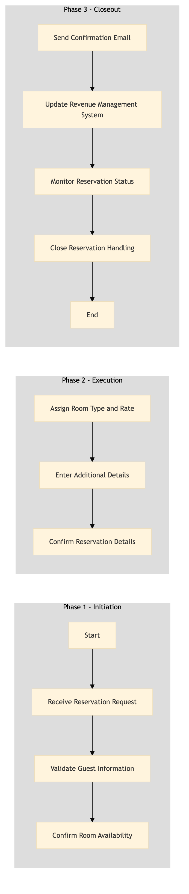

| Role | Steps |
|---|---|
| Revenue Manager | 1.1 1.3 2.1 2.3 3.2 3.4 |
| Front Desk Agent | 1.2 2.2 3.1 3.3 |
| Step | Name | Role | System | Input | Output | KPI | Dec? | Exc? | Pain Point / Risk |
|---|---|---|---|---|---|---|---|---|---|
| 1.1 | Receive Reservation Request | Revenue Manager, Front Desk Agent | SynXis CRS, Oracle OPERA Cloud | Reservation request via SynXis CRS or phone call | Reservation record in Oracle OPERA Cloud | Less than 3 minutes to capture reservation details | N | Y | Handling conflicting room availability during peak seasons |
| 1.2 | Validate Guest Information | Front Desk Agent, Revenue Manager | Oracle OPERA Cloud, Marriott Bonvoy CRM | Guest information from reservation request | Validated guest profile in Oracle OPERA Cloud | Less than 2 minutes to validate information | N | Y | Ensuring data accuracy for loyalty program benefits |
| 1.3 | Confirm Room Availability | Revenue Manager, Front Desk Agent | Oracle OPERA Cloud, IDeaS G3 RMS | Room type and date range from reservation request | Confirmation of room availability | Less than 1 minute to confirm availability | Y | Y | Managing last-minute requests during high occupancy |
| 2.1 | Assign Room Type and Rate | Revenue Manager, Front Desk Agent | Oracle OPERA Cloud, IDeaS G3 RMS | Guest preferences and room availability | Assigned room type and rate in Oracle OPERA Cloud | Less than 2 minutes to assign room type and rate | N | Y | Balancing guest satisfaction with revenue targets |
| 2.2 | Enter Additional Details | Front Desk Agent, Revenue Manager | Oracle OPERA Cloud | Guest preferences and special requests | Updated reservation record in Oracle OPERA Cloud | Less than 2 minutes to enter additional details | N | Y | Handling complex requests with multiple amenities |
| 2.3 | Confirm Reservation Details | Front Desk Agent, Revenue Manager | Oracle OPERA Cloud, SynXis CRS | Final reservation details | Confirmed reservation record in Oracle OPERA Cloud and SynXis CRS | Less than 1 minute to confirm details | N | Y | Ensuring real-time synchronization between systems |
| 3.1 | Send Confirmation Email | Front Desk Agent, Revenue Manager | Oracle OPERA Cloud, Marriott Bonvoy CRM | Confirmed reservation details | Confirmation email sent to guest | Less than 1 minute to send confirmation email | N | Y | Handling guests with multiple bookings |
| 3.2 | Update Revenue Management System | Revenue Manager | IDeaS G3 RMS, Oracle OPERA Cloud | Confirmed reservation details | Updated revenue forecast in IDeaS G3 RMS | Less than 2 minutes to update revenue system | N | Y | Adjusting forecasts for last-minute changes |
| 3.3 | Monitor Reservation Status | Revenue Manager, Front Desk Agent | Oracle OPERA Cloud, IDeaS G3 RMS | Confirmed reservation details | Monitored reservation status in Oracle OPERA Cloud and IDeaS G3 RMS | Less than 1 minute to monitor status | Y | Y | Managing cancellations or changes during stay |
| 3.4 | Close Reservation Handling | Revenue Manager, Front Desk Agent | Oracle OPERA Cloud | Final reservation details and status | Closed reservation record in Oracle OPERA Cloud | Less than 1 minute to close reservation handling | N | Y | Ensuring all data is accurately recorded |
The process RM-RV-01 handles inbound reservations at a Marriott full-service hotel, ensuring accurate capture and management of guest bookings through Oracle OPERA Cloud PMS and other integrated systems.